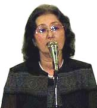

清水栄子さんからの報告
（2003年9月5日エル大阪「1960年三池・1963年ＣＯ大災害」関西写真展実行委員会結成会議における講演より）

清水栄子さん、三池ＣＯ被災者の会事務局長。熊本県荒尾市在住。夫 清水正重さんは、昭和３８年１１月９
日常一番で仕事を終え昇降中、三川坑本線付近において炭じん大爆発で被災、意識不明のまま救出されるも、現在もなお療養中で
ある。
こんばんは。一日のお勤めをですね、終えられた後、大変お疲れのところを、また、こんなに暑い中をで
すね、こうして集まっていただきありがとうございます。
私としてちょうど４０年という節目、３９年にもおよぶ脳障害を抱えた、人間としても脳の一番大事なところをやられてしまった
夫たちを抱えた家族にとって、本当に、青天のへきれきとも言えるような出来事でございました。
私は当事３３歳でございまして、夫は３９歳、市の選管の方に私は勤めてアルバイトをしておりましたが、とにかく夫が被災を受
けたということで、もう当日は飛んで行きまして、三川鉱の坑口近くのですね、組合事務所へ詰め掛けたわけなんですけれども、夜
の１０時頃夫が救出されたと報告を受けまして、三井鉱山が経営している病院へ駆けつけました。ところがもう行ってみますとです
ね、その病院の中はもう戦場のような状態で、病院のありとあらゆる空いた所に畳１枚をひきまして患者１人をゴロンと寝かせてあ
ると、ただもう、それも作業着のまんまでですね、炭にまみれた体を横たえているというのが現状でした。
私は夫の姿を探してやっとそれも、三池労組の指導でですね、ちゃんと連絡をとられていまして、各地区からですね、被災
していない労働者の人たちがそれぞれ受け持たれて、私が着いた時には「清水はここにいるよ」という連絡がついていましたんで、
あちこち探し回ることもなく、すぐ行けましたんですが、もう夫はその時仮死状態でですね、ぜんぜん反応もありませんでした。そ
んな中で、ザーと患者を並べて、家族が駆けつけますと、医師や看護婦が寄って来ると。だから、家族がね、近づかないとほったら
かしのような状態でした。
そして、２週間近くは命の危険もありまして、絶対動かすことが出来ない状態でしたんですが、それもですね、酸素吸入にしろ、
宮嶋さんとおんなじようにビッグ栄養でしたが、それも家族の手でやらなければ手が足りない、医者が足りないというような状況で
したので、本当に、あのー、医療的な知識がないままにやらされていたというのが実態でございました。
そして、当事夫は２１日間ぐらいは意識が不明で、その意識不明のまんま１１月の２５日にですね、九大病院の方に送られたわけ
なんですけども、それから意識が戻りましたのが１週間ぐらいしてからでしたけども、あのー、意識が戻った夫を見て、私はもうこ
れまたびっくりしました。それは、ぜんぜん目は動かさない、手足も動かさない、ただ目を開けただけという状態の中で、それから
半年近くは付きっきりで介抱しまして、家の方は子供が３人おりますので、夫の姉家族がですね、一緒になって私たちの子供をみて
くれたというのが実情なんですけれども、夫はその後意識が戻ったものの、もう、あのー、私が呼んでも反応がない、なぜここに来
ているのかもわからない、子供が何人いて、名前は誰だということさえもわからない状態でした。
それがだんだん日が経ちますうちにですね、あのー、爆発後覚えさせたことだけなんとか出来るようになりまして、半年の中で、
やっと自分で箸が持てて食事が出来ると。それまでは家族が一生懸命になって赤ちゃんにモノを教えるのとおんなじでした。という
ことでなんとか一人で食事が出来るようになったのですが、トイレに連れて行けば最初は用足しもですね、するということでさえも
忘れてしまっているもんですから、あのー、大のときはこうしてしゃがまんといかんよ、座ってやらにゃいかんということも教え、
食べることから排泄することまでいちいち家族が付きっきりでやってきたということです。
その当時ですね、色んな検査の中で私の夫は視覚障害が激しくて、ただ、音感だけは残っていますよという診断が出たわけです。
音楽だけは以前青年時代にレコードコンサートをやったりですね、マンドリンを弾いたりということで、非常に音楽には堪能して
ましたので、その部分がが残ったということだけを本人としては幸せだったかなーと思うんですけれども、字が読めない、話が出来
ないというわけですから、楽譜を見ながら音楽を奏でるということは出来ないというふうな状態だったんですね。その状態が今でも
続いており、私が目の前に立ちましても、私ということがわかりません。ただ声を掛ければその声色で私ということがわかると。で
すから、子供たちが目の前に出て立っていても、他人が来たように挨拶する。ただ、他人の中で病院で４０年間もやってますので、
他人に対する気遣いは持っているんですね。誰か来たら「どうもこんにちは」というふうなことですから、家族に対してもそのとお
りです。月１回の外泊があっても「お邪魔します」というような状態で、食事がとれてやっと終わったら「お世話になりました。ご
馳走さまでした」というふうに、他人の中で混じっているというのが家の中でもずっーと続いている。我が家に帰ったということで
はないと私は認識しているんですけども。
そういうことでありましたけども、当時は私の家ばっかりではなくしてですね、８３９名の患者さんたちの症状によって色んな問
題が起こりました。重傷患者は私の家を先頭にですね、ありましたけども、家庭で療養する中程度の患者さんについてはこれまた大
変な問題がありました。ただ脳細胞を冒されたためにですね、子供と同じような状態になって、自分の感情のままに暴れたり、子供
を叩いたり、赤ちゃんを投げ飛ばしたりというふうな、家族にとっては思ってもみなかったようなお父さんになってしまったという
のが現状でした。
そういった状態の中でですね、８３９名の患者、４５８名の死者という大災害を起こしておきながら、ＣＯ患者というのは、どう
してもですね、当時の労災法では救われないというふうなことで、当時はこういうふうな患者になったら３年がきたら症状固定患者
としてＣＯ法は打ち切られ首になるというのが現状です。それから、生活についても働いてきた平均賃金をやるということです。そ
れと遺族についてはその時の一時金でやってしまうというような労災法でしたので、この脳障害を抱えたＣＯ患者にとってはですね、
どうしてもその時の炭鉱の労災法では救えないということで、４０年の４月からですね、特別に法律を作る特別立法化の闘いをどう
してもやらにゃいかんということで、もう、本当に色んな指導を受けましたけども、私たちもお父さんを首から守るためにはね、
自分たちが闘うしかないとみんなで話し合いをしながら「家族の会」が結成されましたので、その中でお父さんたちの色んな問題を
出し合いながら、自分ひとりだけだなーと思っていたところが、ここにきて話をしてみたらね、やっぱり同じような状態があるんだ
なーということで話が共通になりまして、それならやっぱりお父さんの首を守るためには法律を作るしかないのかというふうになり
ながらですね、私たちも４０年のメーデーから会場に出掛けて行って訴えを、爆発によって、人間性を無くした部分をですね、みん
なの前で訴えると。非常に普通の常識では、夫がそうなったことを隠したいんですけども、それを隠さないでみんなの前で訴えると、
全国の労働者の支援共闘を呼びかけるというふうなことで立ち上がったわけです。そして、三池労組のニュースカーで全国へビラを
配りながら東京へ参加するということが３泊ほど行われました。中央の国会の方に向かって、議員さんたちに訴えたり、労働者に訴
えたり、カンパをお願いしたりということで、ひと月のうちに３回も４回も上京したりして、ＣＯ立法化に向けて闘いが行われまし
て、最終的にはいよいよ法律化が出来るというのが４２年の７月なんですけれども、どうも資本のほうは切り崩しにかかっていると
いう情報が流れまして、私たちはこれまで闘ってきたのに、ＣＯ法が出来ないのなら矢も盾も堪らないという気持ちになりまして、
最終段階では１００名の家族が労働省に行動を起こしまして、労働大臣の前でハンストをしたり、私はそん時は地元におりまして、
いよいよＣＯ法が切り崩されるのならとてもじゃないけど堪らないというふうな切羽詰った気持ちで坑内のほうに座り込みを行った
ということなんですが、その時の気持ちはですね、いま思い出しても考えられない気持ちなんですけども、あの三川坑の斜坑をです
ね、普通の労働者の人は人車に乗って坑内へ降りるんですけれど、私たちは、通路に敷き詰められている玉砂利を踏みしめながら、
もう緊張で足はガクガクしているんですけど、坑内へ坑内へと進んで行ったわけなんですが、私は家族会の責任者ということで先頭
を切って行ったんですけれども、これが目的地まで着けられるかが心配でしたけれど、斜坑を半分ほど下った時に、職制の方から、
これ以上あんたたちは下っては命の保証はしませんよというようなことまで言われながらですね、私たちはそれに反応も示さずに無
口で下りていったですが、目抜きという連絡坑道まで来て、ここが一番安全だろうということで、６日間の座り込みを強行したんで
すが、そのような主婦に対してですね、会社は食料をストップするということでですね、全然物を入れないというふうな兵糧攻め
の攻撃を仕掛けてきたわけですが、色んな支援の元に、夜中に弁当を差入れるとか、水については坑内で働く人たちが水筒を余分に
持ってきてくれて私たちに水をくださるとかいうことでしたけども、とにかく坑内は湿度が高くてジッと座ってても汗がダラダラ出
るような、眼だけ光っているような６日間を過ごしました。
そういうことでなんとかＣＯ法が成立したということになったんですけども、やはり、あのう、４つの柱というのは、解雇問題と
○○保障と完全治療と生活の保障、この４つはですね、明文化されなかったんですね。それからは組合と会社の協定ということにゆ
だねられて、３年間は解雇しないが、いまの社会情勢の中では永久に解雇しませんと言えないということでですね、３年ごとの協定
に切り替えるということで決まってしまったわけですね。
そういうふうになってもですね、会社の責任ははっきりせず、こりゃあどうしても会社の責任を明らかにせんかぎりは、あれだけ
の災害が起こっているのに会社の責任ははっきりしないというのは、だから、とにかく裁判に訴えようということでマンモス裁判
が始まったわけです。
で、そのマンモス裁判も１３年目にですね、和解が出されるわけなんですが、私たち３２名はどうしても会社の責任がはっきりし
ない限りは私たちは和解出来ないと、和解というのは、両方が歩み寄ってうやむやにされてしまうんじゃないかというふうなことを
何回も何回も話合いを続けながらですね、やはり私たちは分かれようということで、マンモス裁判から私たち３２名の闘いが始まっ
たわけなんですね。そして今度は３２名に移ります時に、私は非常に、これまで組合をしっかり信用し、また、尊敬しながら闘いを
続けてきたのにですね、３２名が組合を離れていいのかどうかということを悩み苦しみました。やはり私たちは、会社の責任をはっきり
しないのなら今まで闘ってきた甲斐がないのではないかということでね、裁判する権利は本人一人ひとりの問題なんだからというこ
とがありまして、そしたら、自分の意志で裁判が続けられるんだということで、少しは胸が開いたわけなんですが、今度は３２名
になったら一人ひとりが裁判のやり直しみたいになりまして、マンモス裁判の時には症状ごとに罪状をたてて証言をしていたわけな
んですけども、今度は一人ひとり全員が法廷に立って証言しようということになりましたので、もう本当にその時はそれぞれが法廷
に立って証言するということは大変なことで、しかも家族ですのでね、そういうことで私たちは３２名を五つの班に分けまして、
それぞれ班会議を持ちながらですね、自分たちが失敗しているところを出し合いながらですね、「ここまでせんならんなら私は３２
名の中にのこらにゃよかった」とかね、そういうような声も出たわけですが、やはり私たちにも弱さはあるからですね、そういう弱
さを出し合いながら話合いを続け、そして、最終的にですね、みんなが証言が出来ましたし、子供たちまで連れてきて証言させると
いうところまでいったわけなんです。だから、やはり、あのー、話合いをやっていきながらやるという大事さを噛み締めました。
そういうことで３２名の闘いは結果的には９３年の３月２６日にですね、勝利判決ということを勝ち取りまして、企業の責任が明
らかになったわけです。
それから私たちはその企業の責任を明らかにしたそれを土台にしながらも、ＣＯ協定というものが残りました。そのＣＯ協定を少
しづつ拡大しながら今後も闘いを続けようという意思の統一をしながらやってきたところが、ご存知のように炭鉱の閉山を理由にし
て会社はそのＣＯ協定さえも打ち切ってしまうというふうな攻撃が来たわけです。それでＣＯ協定というのが長い期間に渡ってどん
どんどんどん削られて行ったわけです。夫が外泊する時は会社が送り迎えしていたわけですね、そのＣＯ協定を切るのと同時に送迎
を打ち切ると。それと社宅から出て行けというようなことも言ってきた。これではね、せっかくここまできたのに、なんで会社がね、
こんなお父さんを作りながらね、外泊も出来なくなった夫たちを送迎しないのか、納得出来ないということを話し合いまして、裁判
というものをまた立ち上げたわけですが、３２名の中で該当する人が５人おりました。それは会長の石原さんを始め、５人ですが、
久留米大学が１人、熊大が１人、労災病院が２人、そして九大ということで、闘いを起こしたわけですが、４年間の闘いの中で、やはり
裁判所側もですね、このような災害を起こした三井側が送迎の費用を支払いなさいと命令が出たのです。後から、会長の石原さんの
ご主人が亡くなりましたし、熊大の患者さんは現在なんとか外泊ができるわけなんですが、外泊が出来なくなったら送迎をしなさい
という部分が明らかとなりました。私は、夫の外泊は九大まで迎えに行って、連れて帰って、また送って行ってた。だから私は２往
復していたわけですね。それもタクシーを使ってやりました。というのが、九大までですから高速を乗り継いで行くわけで、私はタ
クシーを頼んで外泊していたわけなんですが、結局半分しか判決は、家族の付き添いは認めないとなってしまったわけなんです。他
の患者さんと同じように１往復しか出来ないということで、半分は私たちは負けたわけなんです。けれども、そういうことで、外泊
送迎裁判はやっぱり闘い続け、承知の出来ないことは出来ないとして、闘い続けた結果だと。
本当にこの４０年間闘い続けて、今思いますことは、やはり、自身が納得できないことは出来ないとして闘い続け、また、皆様方
の力がなければ、私たちだけではとても出来ない問題ですので、全国の皆さんの共闘支援のお陰があるからだと思いますし、やはり、
闘ってきてよかったなーと、闘わなかったら、今ごろ自分自身どうなっていたかと、闘いの中で仲間の支援の中で一緒に闘い続ける
ことが出来たと私は思っております。
ですから、このように、やっぱり、災害を受けた者がですね、自ら闘わんなら、今の社会の中では生きて行けないということをつ
くづく知らされましたし、非常に今、様々な問題が起こっており、例えば勝手に首を切られたりする現状の中で、自分がまず声をあ
げるということが大事だということをつくづく考えていますし、今後やはり私たちは夫を抱えながら、納得できないものは納得でき
ないとして、皆様と一緒に生きて行こうと思っています。
ちょうどこの４０年を機にこれからも私たちは人間として人間らしく生き続けられることをですね、皆様方と一緒に行きたいと思
いますが、どうか一緒にこれからもＣＯを風化させることなくですね、声をあげて行きたいというふうに考えております。
よろしくお願いいたします。
BACK
|